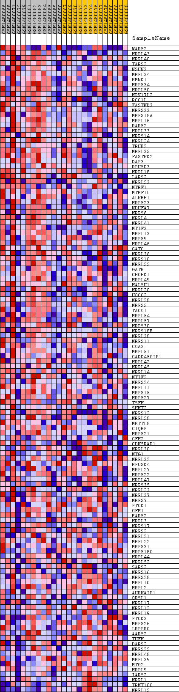
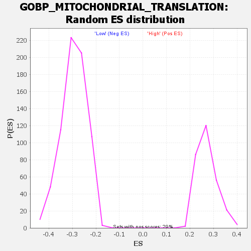

Profile of the Running ES Score & Positions of GeneSet Members on the Rank Ordered List
| Dataset | WG6v3.CPT1A.cls#High_versus_Low.CPT1A.cls#High_versus_Low_repos |
| Phenotype | CPT1A.cls#High_versus_Low_repos |
| Upregulated in class | High |
| GeneSet | GOBP_MITOCHONDRIAL_TRANSLATION |
| Enrichment Score (ES) | 0.45444894 |
| Normalized Enrichment Score (NES) | 1.6737889 |
| Nominal p-value | 0.0 |
| FDR q-value | 1.0 |
| FWER p-Value | 1.0 |
| SYMBOL | TITLE | RANK IN GENE LIST | RANK METRIC SCORE | RUNNING ES | CORE ENRICHMENT | |
|---|---|---|---|---|---|---|
| 1 | WARS2 | WARS2 | 8 | 0.303 | 0.0902 | Yes |
| 2 | MRPL43 | MRPL43 | 400 | 0.106 | 0.1018 | Yes |
| 3 | MRPL40 | MRPL40 | 539 | 0.095 | 0.1230 | Yes |
| 4 | TARS2 | TARS2 | 1014 | 0.072 | 0.1200 | Yes |
| 5 | NSUN3 | NSUN3 | 1018 | 0.072 | 0.1414 | Yes |
| 6 | MRPL34 | MRPL34 | 1165 | 0.068 | 0.1541 | Yes |
| 7 | RMND1 | RMND1 | 1459 | 0.060 | 0.1569 | Yes |
| 8 | MRPS34 | MRPS34 | 1471 | 0.060 | 0.1742 | Yes |
| 9 | MRPL50 | MRPL50 | 1532 | 0.058 | 0.1885 | Yes |
| 10 | MPV17L2 | MPV17L2 | 1561 | 0.057 | 0.2043 | Yes |
| 11 | RCC1L | RCC1L | 1713 | 0.054 | 0.2127 | Yes |
| 12 | FASTKD3 | FASTKD3 | 1727 | 0.054 | 0.2283 | Yes |
| 13 | MRPS33 | MRPS33 | 1742 | 0.054 | 0.2437 | Yes |
| 14 | MRPS18A | MRPS18A | 1765 | 0.053 | 0.2585 | Yes |
| 15 | MRPL16 | MRPL16 | 1972 | 0.050 | 0.2628 | Yes |
| 16 | RARS2 | RARS2 | 2085 | 0.048 | 0.2713 | Yes |
| 17 | MRPL33 | MRPL33 | 2128 | 0.047 | 0.2833 | Yes |
| 18 | MRPS14 | MRPS14 | 2135 | 0.047 | 0.2972 | Yes |
| 19 | MRPL24 | MRPL24 | 2217 | 0.046 | 0.3068 | Yes |
| 20 | TRUB2 | TRUB2 | 2295 | 0.045 | 0.3163 | Yes |
| 21 | MRPL35 | MRPL35 | 2335 | 0.045 | 0.3276 | Yes |
| 22 | FASTKD2 | FASTKD2 | 2476 | 0.042 | 0.3331 | Yes |
| 23 | DAP3 | DAP3 | 2589 | 0.041 | 0.3395 | Yes |
| 24 | RPUSD3 | RPUSD3 | 2625 | 0.040 | 0.3498 | Yes |
| 25 | MRPL18 | MRPL18 | 2691 | 0.040 | 0.3583 | Yes |
| 26 | LARS2 | LARS2 | 2694 | 0.040 | 0.3701 | Yes |
| 27 | MRPL53 | MRPL53 | 3033 | 0.036 | 0.3634 | Yes |
| 28 | MTRF1 | MTRF1 | 3065 | 0.035 | 0.3724 | Yes |
| 29 | MTRF1L | MTRF1L | 3098 | 0.035 | 0.3812 | Yes |
| 30 | ALKBH1 | ALKBH1 | 3105 | 0.035 | 0.3914 | Yes |
| 31 | MRPS23 | MRPS23 | 3178 | 0.034 | 0.3979 | Yes |
| 32 | NDUFA7 | NDUFA7 | 3391 | 0.032 | 0.3965 | Yes |
| 33 | MRPS6 | MRPS6 | 3397 | 0.032 | 0.4058 | Yes |
| 34 | MRPL4 | MRPL4 | 3652 | 0.030 | 0.4015 | Yes |
| 35 | MRPL41 | MRPL41 | 3867 | 0.028 | 0.3988 | Yes |
| 36 | MTIF3 | MTIF3 | 3978 | 0.027 | 0.4011 | Yes |
| 37 | MRPL13 | MRPL13 | 3989 | 0.027 | 0.4086 | Yes |
| 38 | MRPS9 | MRPS9 | 4212 | 0.025 | 0.4046 | Yes |
| 39 | MRPL46 | MRPL46 | 4276 | 0.024 | 0.4087 | Yes |
| 40 | GATC | GATC | 4354 | 0.024 | 0.4118 | Yes |
| 41 | MRPL36 | MRPL36 | 4532 | 0.023 | 0.4094 | Yes |
| 42 | MRPS10 | MRPS10 | 4544 | 0.023 | 0.4156 | Yes |
| 43 | MRPL55 | MRPL55 | 4663 | 0.022 | 0.4160 | Yes |
| 44 | GATB | GATB | 4739 | 0.021 | 0.4184 | Yes |
| 45 | CHCHD1 | CHCHD1 | 4764 | 0.021 | 0.4234 | Yes |
| 46 | MRPL49 | MRPL49 | 4778 | 0.021 | 0.4290 | Yes |
| 47 | MALSU1 | MALSU1 | 4804 | 0.021 | 0.4339 | Yes |
| 48 | MRPL20 | MRPL20 | 4818 | 0.021 | 0.4394 | Yes |
| 49 | UQCC2 | UQCC2 | 4942 | 0.020 | 0.4390 | Yes |
| 50 | MRPL28 | MRPL28 | 5024 | 0.019 | 0.4405 | Yes |
| 51 | MRPS5 | MRPS5 | 5109 | 0.019 | 0.4417 | Yes |
| 52 | TACO1 | TACO1 | 5270 | 0.018 | 0.4387 | Yes |
| 53 | MRPL54 | MRPL54 | 5326 | 0.017 | 0.4410 | Yes |
| 54 | MRPL57 | MRPL57 | 5501 | 0.016 | 0.4369 | Yes |
| 55 | MRPS30 | MRPS30 | 5570 | 0.016 | 0.4382 | Yes |
| 56 | MRPS18B | MRPS18B | 5594 | 0.016 | 0.4417 | Yes |
| 57 | MRPL38 | MRPL38 | 5641 | 0.016 | 0.4440 | Yes |
| 58 | MRPS11 | MRPS11 | 5652 | 0.015 | 0.4481 | Yes |
| 59 | COA3 | COA3 | 5671 | 0.015 | 0.4518 | Yes |
| 60 | MRPL51 | MRPL51 | 5724 | 0.015 | 0.4536 | Yes |
| 61 | GADD45GIP1 | GADD45GIP1 | 5908 | 0.014 | 0.4484 | Yes |
| 62 | MRPL42 | MRPL42 | 5930 | 0.014 | 0.4515 | Yes |
| 63 | MRPL45 | MRPL45 | 6027 | 0.014 | 0.4506 | Yes |
| 64 | MRPL14 | MRPL14 | 6104 | 0.013 | 0.4507 | Yes |
| 65 | MTIF2 | MTIF2 | 6109 | 0.013 | 0.4544 | Yes |
| 66 | MRPS24 | MRPS24 | 6223 | 0.013 | 0.4524 | No |
| 67 | MRPL11 | MRPL11 | 6278 | 0.013 | 0.4534 | No |
| 68 | MRPS15 | MRPS15 | 6544 | 0.011 | 0.4431 | No |
| 69 | MRPS27 | MRPS27 | 6597 | 0.011 | 0.4437 | No |
| 70 | TSFM | TSFM | 6735 | 0.011 | 0.4398 | No |
| 71 | SHMT2 | SHMT2 | 6829 | 0.010 | 0.4381 | No |
| 72 | MRPS12 | MRPS12 | 6842 | 0.010 | 0.4405 | No |
| 73 | MRPL58 | MRPL58 | 6929 | 0.010 | 0.4391 | No |
| 74 | METTL8 | METTL8 | 7191 | 0.009 | 0.4282 | No |
| 75 | C1QBP | C1QBP | 7257 | 0.009 | 0.4274 | No |
| 76 | MRPS21 | MRPS21 | 7371 | 0.008 | 0.4240 | No |
| 77 | GFM2 | GFM2 | 7601 | 0.007 | 0.4143 | No |
| 78 | CDK5RAP1 | CDK5RAP1 | 7940 | 0.006 | 0.3987 | No |
| 79 | MRPL30 | MRPL30 | 8048 | 0.006 | 0.3949 | No |
| 80 | MTG1 | MTG1 | 8259 | 0.005 | 0.3856 | No |
| 81 | MRPL32 | MRPL32 | 8287 | 0.005 | 0.3858 | No |
| 82 | RPUSD4 | RPUSD4 | 8596 | 0.004 | 0.3711 | No |
| 83 | MRPL27 | MRPL27 | 8909 | 0.003 | 0.3559 | No |
| 84 | MRPS22 | MRPS22 | 8955 | 0.003 | 0.3545 | No |
| 85 | MRPL47 | MRPL47 | 9017 | 0.003 | 0.3522 | No |
| 86 | MRPS35 | MRPS35 | 9297 | 0.002 | 0.3384 | No |
| 87 | MRPL23 | MRPL23 | 9384 | 0.002 | 0.3345 | No |
| 88 | MRPL37 | MRPL37 | 9476 | 0.002 | 0.3302 | No |
| 89 | MRPS7 | MRPS7 | 9698 | 0.001 | 0.3190 | No |
| 90 | PTCD1 | PTCD1 | 9710 | 0.001 | 0.3187 | No |
| 91 | GFM1 | GFM1 | 9776 | 0.001 | 0.3155 | No |
| 92 | EARS2 | EARS2 | 10617 | -0.002 | 0.2725 | No |
| 93 | MRPL3 | MRPL3 | 10666 | -0.002 | 0.2706 | No |
| 94 | MRPS17 | MRPS17 | 10829 | -0.003 | 0.2630 | No |
| 95 | MRPS2 | MRPS2 | 10841 | -0.003 | 0.2632 | No |
| 96 | MRPL21 | MRPL21 | 11201 | -0.004 | 0.2457 | No |
| 97 | MRPL22 | MRPL22 | 11435 | -0.005 | 0.2350 | No |
| 98 | MRPS31 | MRPS31 | 12376 | -0.008 | 0.1886 | No |
| 99 | MRPS18C | MRPS18C | 12479 | -0.008 | 0.1857 | No |
| 100 | MRPL44 | MRPL44 | 12641 | -0.009 | 0.1799 | No |
| 101 | MRPL52 | MRPL52 | 12925 | -0.010 | 0.1681 | No |
| 102 | SARS2 | SARS2 | 12951 | -0.010 | 0.1698 | No |
| 103 | MRPS16 | MRPS16 | 12986 | -0.010 | 0.1710 | No |
| 104 | MRPS28 | MRPS28 | 13015 | -0.010 | 0.1726 | No |
| 105 | MRPL10 | MRPL10 | 13277 | -0.011 | 0.1624 | No |
| 106 | MRPL2 | MRPL2 | 13369 | -0.012 | 0.1612 | No |
| 107 | AURKAIP1 | AURKAIP1 | 13386 | -0.012 | 0.1640 | No |
| 108 | QRSL1 | QRSL1 | 13436 | -0.012 | 0.1651 | No |
| 109 | MRPL17 | MRPL17 | 13464 | -0.012 | 0.1674 | No |
| 110 | MRPL12 | MRPL12 | 13590 | -0.013 | 0.1648 | No |
| 111 | MRPL19 | MRPL19 | 14191 | -0.016 | 0.1386 | No |
| 112 | PTCD3 | PTCD3 | 14236 | -0.017 | 0.1413 | No |
| 113 | MRPS26 | MRPS26 | 14353 | -0.017 | 0.1405 | No |
| 114 | LRPPRC | LRPPRC | 14437 | -0.018 | 0.1416 | No |
| 115 | AARS2 | AARS2 | 14526 | -0.019 | 0.1427 | No |
| 116 | TUFM | TUFM | 14635 | -0.019 | 0.1429 | No |
| 117 | DARS2 | DARS2 | 14828 | -0.021 | 0.1391 | No |
| 118 | MRPS25 | MRPS25 | 14832 | -0.021 | 0.1452 | No |
| 119 | MRPL48 | MRPL48 | 14857 | -0.021 | 0.1503 | No |
| 120 | MRPL39 | MRPL39 | 15627 | -0.028 | 0.1188 | No |
| 121 | MTG2 | MTG2 | 15797 | -0.029 | 0.1188 | No |
| 122 | MRPL9 | MRPL9 | 15990 | -0.031 | 0.1182 | No |
| 123 | IARS2 | IARS2 | 16259 | -0.034 | 0.1147 | No |
| 124 | MRPL1 | MRPL1 | 16623 | -0.039 | 0.1075 | No |
| 125 | TRMT10C | TRMT10C | 17469 | -0.055 | 0.0802 | No |
| 126 | MRPL15 | MRPL15 | 17982 | -0.070 | 0.0746 | No |

